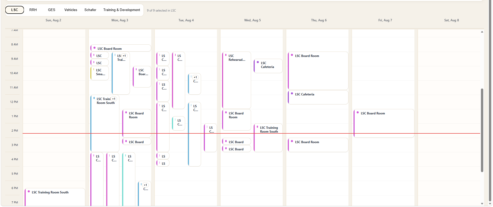

Production internal platform
Clearer bookings. Faster decisions.
I rebuilt the company calendar’s busiest views so employees could scan room bookings, vehicle availability, and events without losing details in crowded grids.
- Built
- Redesigned week views; new day and holiday views
- Stack
- JavaScript · Node.js · Exchange / Microsoft 365
- Reach
- Six calendar areas in an environment supporting 900+ users
Explore the redesignBefore / after · architecture · outcomes+
Visual evidence
See what changed.
Choose an area and compare the original with the redesign. Names and emails are blurred.

ORIGINAL / LSC WEEKEvents were positioned mainly by time. When many bookings overlapped, cards became narrow, titles were clipped, and employees could not quickly see the requester or enough booking context.
Six calendars. One place to act.
Room, vehicle, and event calendars cover LSC, RRH, GES, Vehicles, Schafer, and Training & Development. Employees can switch between month, week, day, agenda, and holiday views.
Familiar branding. More useful views.
Crowded time grids hid booking details. I redesigned each area’s week view, added a day view, and introduced company holidays through 2027. Existing month and agenda views remained available.
From Exchange data to readable event cards.
A Node service normalizes Exchange events, filters dates and mailboxes, and handles time zones. The API supplies requester, time, purpose, and availability fields for readable week and day cards.
GET /api/calendar?start=&end=&mbox=
status = past | happening-now | upcoming | available
booking link = Microsoft Form + preselected vehicle
sort(today) = happening now → upcoming → earlierAvailability becomes a clear next action.
Green identifies availability, blue identifies future bookings, orange identifies events happening now, grey identifies past events, and a red treatment marks the current day. Current events automatically appear ahead of future and past items. Requester and booking information is visible where useful, and clicking an available vehicle opens a shorter booking path with the vehicle already selected.